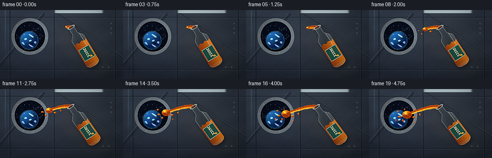
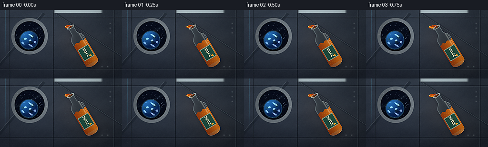

CODING AGENTS AS PIXEL WORLD MODELS
traex/DeepSeek-V4.1-Flash · phygen_003
点击播放 · 原生 RGB 像素
逐轮保存的候选
回放视频、检查图与代码变化。
每份候选均可单独播放。实际图片检查记录在下方工具轨迹中。
候选 01播放与检查图
点击播放 · 原生 RGB 像素


展开代码变化
--- 上一保存版本
+++ 本次保存版本
@@ -0,0 +1,645 @@
+from __future__ import annotations
+
+import math
+from pathlib import Path
+
+import numpy as np
+from PIL import Image, ImageFilter
+
+import artifact_io
+
+
+ROOT = Path(__file__).resolve().parent
+W, H = 256, 144
+N, FPS = 20, 4
+SS = 4
+PW, PH = W * SS, H * SS
+
+
+def smoothstep(edge0, edge1, value):
+ t = np.clip((value - edge0) / (edge1 - edge0), 0.0, 1.0)
+ return t * t * (3.0 - 2.0 * t)
+
+
+def blend(image, mask, color, opacity=1.0):
+ alpha = np.clip(mask * opacity, 0.0, 1.0)[..., None]
+ rgb = np.asarray(color, dtype=np.float32)
+ if rgb.ndim == 1:
+ return image * (1.0 - alpha) + rgb[None, None, :] * alpha
+ return image * (1.0 - alpha) + rgb * alpha
+
+
+def blur_mask(mask, radius):
+ image = Image.fromarray(np.clip(mask * 255.0, 0, 255).astype(np.uint8))
+ image = image.filter(ImageFilter.GaussianBlur(radius))
+ return np.asarray(image, dtype=np.float32) / 255.0
+
+
+def blur_rgb(image, radius):
+ data = np.clip(image, 0, 255).astype(np.uint8)
+ return np.asarray(
+ Image.fromarray(data).filter(ImageFilter.GaussianBlur(radius)),
+ dtype=np.float32,
+ )
+
+
+def radial_glow(x, y, cx, cy, radius, power=2.0):
+ distance = np.sqrt((x - cx) ** 2 + (y - cy) ** 2) / radius
+ return np.exp(-(distance**power) * 2.6)
+
+
+def line_mask(x, y, x0, y0, x1, y1, width):
+ vx, vy = x1 - x0, y1 - y0
+ length2 = max(vx * vx + vy * vy, 1e-5)
+ t = np.clip(((x - x0) * vx + (y - y0) * vy) / length2, 0.0, 1.0)
+ px, py = x0 + t * vx, y0 + t * vy
+ return np.sqrt((x - px) ** 2 + (y - py) ** 2) <= width
+
+
+def star_field(x, y, cx, cy, radius, seed=7):
+ rng = np.random.default_rng(seed)
+ result = np.zeros_like(x, dtype=np.float32)
+ for _ in range(52):
+ angle = rng.uniform(0, math.tau)
+ distance = radius * math.sqrt(rng.uniform(0.02, 0.96))
+ sx = cx + math.cos(angle) * distance
+ sy = cy + math.sin(angle) * distance
+ brightness = rng.uniform(0.35, 1.0)
+ spread = rng.uniform(0.20, 0.55)
+ result += brightness * np.exp(
+ -((x - sx) ** 2 + (y - sy) ** 2) / (2.0 * spread * spread)
+ )
+ return np.clip(result, 0.0, 1.6)
+
+
+def make_background(x, y):
+ yn = y / H
+ xn = x / W
+ image = np.empty((PH, PW, 3), dtype=np.float32)
+
+ # Cool, softly lit habitat wall.
+ image[..., 0] = 28.0 + 18.0 * (1.0 - yn) + 4.0 * (1.0 - xn)
+ image[..., 1] = 35.0 + 20.0 * (1.0 - yn) + 3.0 * (1.0 - xn)
+ image[..., 2] = 43.0 + 22.0 * (1.0 - yn) + 5.0 * (1.0 - xn)
+
+ wall_light = radial_glow(x, y, 42, 22, 155, 2.0)
+ image += wall_light[..., None] * np.array([9.0, 12.0, 15.0])
+ warm_bounce = radial_glow(x, y, 197, 103, 76, 2.4)
+ image += warm_bounce[..., None] * np.array([7.0, 4.5, 1.5])
+
+ texture = (
+ np.sin(x * 0.075 + np.sin(y * 0.09) * 1.8)
+ + 0.7 * np.sin(y * 0.19 + x * 0.018)
+ + 0.4 * np.sin((x + y) * 0.31)
+ )
+ image += texture[..., None] * np.array([1.0, 1.1, 1.2])
+
+ # Recessed panel seams and bevels.
+ for sx in (20.0, 112.0, 239.0):
+ core = np.exp(-((x - sx) / 0.60) ** 2)
+ shadow = np.exp(-((x - sx - 0.85) / 0.72) ** 2)
+ light = np.exp(-((x - sx + 0.72) / 0.55) ** 2)
+ image = blend(image, core, (9, 14, 19), 0.62)
+ image = blend(image, shadow, (8, 12, 17), 0.36)
+ image = blend(image, light, (104, 119, 130), 0.22)
+
+ for sy in (15.0, 124.0):
+ core = np.exp(-((y - sy) / 0.62) ** 2)
+ light = np.exp(-((y - sy - 0.9) / 0.7) ** 2)
+ image = blend(image, core, (7, 11, 16), 0.60)
+ image = blend(image, light, (104, 118, 128), 0.18)
+
+ # Broad diagonal structural ribs give the cabin a curved, engineered depth.
+ rib_alpha = np.zeros_like(x, dtype=np.float32)
+ rib_alpha += 0.8 * line_mask(x, y, -8, 124, 91, 9, 2.8)
+ rib_alpha += 0.8 * line_mask(x, y, 117, 7, 260, 101, 2.1)
+ rib_alpha = np.clip(rib_alpha, 0.0, 1.0)
+ rib_highlight = np.clip(
+ line_mask(x, y, -8, 120, 88, 7, 0.65)
+ + line_mask(x, y, 118, 9, 257, 98, 0.45),
+ 0.0,
+ 1.0,
+ )
+ image = blend(image, rib_alpha, (20, 28, 35), 0.45)
+ image = blend(image, rib_highlight, (114, 129, 139), 0.28)
+
+ # Small maintenance details on the right-hand wall.
+ for px, py in ((231, 28), (231, 38), (231, 48), (214, 119), (226, 119)):
+ detail = np.exp(-((x - px) ** 2 + (y - py) ** 2) / 1.8)
+ image = blend(image, detail, (112, 123, 131), 0.55)
+
+ # Window: dark orbital view, Earth, and a layered metal pressure ring.
+ cx, cy, outer, inner = 62.0, 55.0, 38.0, 31.7
+ rr = np.sqrt((x - cx) ** 2 + (y - cy) ** 2)
+ ring = smoothstep(outer + 0.8, outer - 0.5, rr) * smoothstep(
+ inner - 0.7, inner + 0.6, rr
+ )
+ ring_bevel = smoothstep(outer - 1.0, outer - 4.0, rr) + smoothstep(
+ inner + 0.4, inner + 2.7, rr
+ )
+ angle = np.arctan2(y - cy, x - cx)
+ metal_tone = 74.0 + 26.0 * np.clip(-np.cos(angle - 2.25), 0.0, 1.0)
+ metal_color = np.stack(
+ [metal_tone * 0.92, metal_tone, metal_tone * 1.08], axis=-1
+ )
+ image = blend(image, ring, metal_color, 0.98)
+ image = blend(image, ring * np.clip(ring_bevel, 0.0, 1.0), (152, 165, 174), 0.45)
+
+ inside = smoothstep(inner + 0.7, inner - 0.4, rr)
+ space = np.zeros_like(image)
+ space[..., 0] = 4.0 + 4.0 * (1.0 - (y - 20.0) / 74.0)
+ space[..., 1] = 7.0 + 7.0 * (1.0 - (y - 20.0) / 74.0)
+ space[..., 2] = 13.0 + 13.0 * (1.0 - (y - 20.0) / 74.0)
+ stars = star_field(x, y, cx, cy, inner - 2.0)
+ space += stars[..., None] * np.array([115.0, 132.0, 155.0])
+ image = image * (1.0 - inside[..., None]) + space * inside[..., None]
+
+ # Earth, lit from upper left with thin atmospheric scattering.
+ ex, ey, er = 60.5, 63.0, 18.6
+ qx, qy = (x - ex) / er, (y - ey) / er
+ rho2 = qx * qx + qy * qy
+ rho = np.sqrt(rho2)
+ z = np.sqrt(np.clip(1.0 - rho2, 0.0, 1.0))
+ light = np.array([-0.55, -0.68, 0.48], dtype=np.float32)
+ light /= np.linalg.norm(light)
+ nx, ny, nz = qx, qy, z
+ illumination = np.clip(nx * light[0] + ny * light[1] + nz * light[2], 0.0, 1.0)
+ ocean = np.stack(
+ [
+ 8.0 + 22.0 * illumination,
+ 34.0 + 72.0 * illumination,
+ 79.0 + 107.0 * illumination,
+ ],
+ axis=-1,
+ )
+ continents = (
+ np.sin(qx * 5.2 + qy * 2.1)
+ + 0.65 * np.sin(qy * 7.8 - qx * 3.2)
+ + 0.35 * np.cos((qx - qy) * 10.5)
+ )
+ land = smoothstep(0.60, 1.15, continents) * smoothstep(0.95, 0.55, rho)
+ ocean = ocean * (1.0 - 0.45 * land[..., None])
+ ocean += land[..., None] * np.array([34.0, 55.0, 28.0]) * illumination[..., None]
+ cloud_noise = (
+ np.sin(qx * 9.0 + np.sin(qy * 5.5) * 1.8)
+ + np.cos(qy * 11.0 - qx * 3.8)
+ )
+ clouds = smoothstep(0.85, 1.32, cloud_noise) * smoothstep(1.02, 0.72, rho)
+ earth = ocean + clouds[..., None] * np.array([118.0, 131.0, 135.0])
+ earth_mask = smoothstep(1.0, 0.965, rho) * inside
+ image = blend(image, earth_mask, earth, 0.98)
+ atmosphere = np.exp(-((rho - 1.02) / 0.055) ** 2) * inside
+ image = blend(image, atmosphere, (75, 164, 218), 0.34)
+
+ # Pressure ring over the glass and evenly spaced fasteners.
+ image = blend(image, ring, metal_color, 0.99)
+ image = blend(image, ring * np.clip(ring_bevel, 0.0, 1.0), (151, 165, 175), 0.40)
+ for index in range(10):
+ theta = math.tau * index / 10.0 + 0.10
+ bx = cx + math.cos(theta) * 34.9
+ by = cy + math.sin(theta) * 34.9
+ bolt = np.exp(-((x - bx) ** 2 + (y - by) ** 2) / 0.75)
+ image = blend(image, bolt, (165, 174, 181), 0.62)
+
+ glass_reflection = np.exp(
+ -((((x - cx) * 0.42 + (y - cy) * 0.91) + 8.0) / 2.2) ** 2
+ ) * inside
+ image = blend(image, glass_reflection, (142, 183, 201), 0.08)
+
+ # Ceiling light and its soft falloff.
+ lamp = (
+ smoothstep(7.4, 5.4, y)
+ * smoothstep(111.0, 117.0, x)
+ * smoothstep(217.0, 210.0, x)
+ )
+ image = blend(image, lamp, (205, 224, 228), 0.78)
+ lamp_glow = blur_mask(lamp, 11.0 * SS)
+ image += lamp_glow[..., None] * np.array([22.0, 26.0, 28.0])
+
+ # Narrow cyan edge light makes the architecture read against the dark cabin.
+ edge_light = np.exp(-((x - 11.0) / 1.05) ** 2) * smoothstep(125, 15, y)
+ image += edge_light[..., None] * np.array([10.0, 28.0, 35.0])
+
+ # A very restrained warm reflection anticipates the juice but keeps it dominant.
+ image += radial_glow(x, y, 147, 62, 54, 2.2)[..., None] * np.array(
+ [8.0, 4.0, 1.0]
+ )
+ return image
+
+
+def bezier_point(p0, p1, p2, p3, t):
+ omt = 1.0 - t
+ return (
+ omt**3 * p0
+ + 3.0 * omt**2 * t * p1
+ + 3.0 * omt * t**2 * p2
+ + t**3 * p3
+ )
+
+
+def bezier_samples(p0, p1, p2, p3, count=120):
+ t = np.linspace(0.0, 1.0, count, dtype=np.float32)
+ omt = 1.0 - t
+ return (
+ omt[:, None] ** 3 * p0[None, :]
+ + 3.0 * omt[:, None] ** 2 * t[:, None] * p1[None, :]
+ + 3.0 * omt[:, None] * t[:, None] ** 2 * p2[None, :]
+ + t[:, None] ** 3 * p3[None, :]
+ ), t
+
+
+def render_stream(image, mouth, progress, x, y):
+ # The stream leaves the neck, drifts laterally, then curls slightly under
+ # its own momentum. Gravity is deliberately absent.
+ p0 = mouth + np.array([-2.0, 0.2], dtype=np.float32)
+ p1 = p0 + np.array([-14.0, -3.0], dtype=np.float32)
+ p2 = p0 + np.array([-40.0, 7.0], dtype=np.float32)
+ p3 = p0 + np.array([-61.0, 14.0], dtype=np.float32)
+ growth = 0.17 + 0.83 * smoothstep(0.0, 1.0, progress)
+ samples, ts = bezier_samples(p0, p1, p2, p3, 140)
+ active = ts <= growth
+ points = samples[active]
+ if len(points) < 3:
+ return image
+
+ margin = 7.0
+ x0 = max(0, int(math.floor((points[:, 0].min() - margin) * SS)))
+ x1 = min(PW, int(math.ceil((points[:, 0].max() + margin) * SS)))
+ y0 = max(0, int(math.floor((points[:, 1].min() - margin) * SS)))
+ y1 = min(PH, int(math.ceil((points[:, 1].max() + margin) * SS)))
+ if x1 <= x0 or y1 <= y0:
+ return image
+
+ xs = x[y0:y1, x0:x1]
+ ys = y[y0:y1, x0:x1]
+ distance2 = np.full(xs.shape, 1.0e9, dtype=np.float32)
+ width_map = np.zeros_like(xs, dtype=np.float32)
+ count = len(points)
+ for index in range(0, count, 2):
+ t = index / max(count - 1, 1)
+ d2 = (xs - points[index, 0]) ** 2 + (ys - points[index, 1]) ** 2
+ better = d2 < distance2
+ distance2[better] = d2[better]
+ local_width = 4.05 * (1.0 - 0.39 * t) + 0.32 * math.sin(t * 23.0)
+ width_map[better] = local_width
+
+ distance = np.sqrt(distance2)
+ mask = smoothstep(width_map + 0.85, width_map - 0.72, distance)
+ edge = np.exp(-((distance - width_map) / 0.78) ** 2)
+ gy, gx = np.gradient(distance)
+ norm = np.sqrt(gx * gx + gy * gy) + 1e-5
+ nx, ny = -gx / norm, -gy / norm
+ diffuse = np.clip(nx * -0.55 + ny * -0.78, 0.0, 1.0)
+ specular = np.clip(nx * -0.48 + ny * -0.84, 0.0, 1.0) ** 15
+
+ texture = 0.5 + 0.5 * np.sin(xs * 1.15 + ys * 0.31)
+ color = np.empty((*mask.shape, 3), dtype=np.float32)
+ color[..., 0] = 164.0 + 68.0 * diffuse + 20.0 * texture
+ color[..., 1] = 55.0 + 77.0 * diffuse + 9.0 * texture
+ color[..., 2] = 5.0 + 19.0 * diffuse
+ color += specular[..., None] * np.array([73.0, 90.0, 37.0])
+ color += edge[..., None] * np.array([45.0, 27.0, 5.0])
+
+ crop = image[y0:y1, x0:x1]
+ alpha = np.clip(mask * 0.97, 0.0, 1.0)[..., None]
+ crop[:] = crop * (1.0 - alpha) + color * alpha
+ return image
+
+
+def render_floating_juice(image, mouth, progress, x, y):
+ p0 = mouth + np.array([-2.0, 0.2], dtype=np.float32)
+ p1 = p0 + np.array([-14.0, -3.0], dtype=np.float32)
+ p2 = p0 + np.array([-40.0, 7.0], dtype=np.float32)
+ p3 = p0 + np.array([-61.0, 14.0], dtype=np.float32)
+ growth = 0.17 + 0.83 * smoothstep(0.0, 1.0, progress)
+ main = bezier_point(p0, p1, p2, p3, growth)
+ main += np.array([-4.5 * progress, 2.2 * progress], dtype=np.float32)
+ main_rx = 2.6 + 8.5 * smoothstep(0.02, 0.94, progress)
+ main_ry = 2.2 + 6.8 * smoothstep(0.05, 0.98, progress)
+
+ blobs = [(main[0], main[1], main_rx, main_ry, 1.22)]
+ specs = [
+ (0.18, 0.65, 13.0, -7.0, 3.3, 2.3, 0.5, -0.4),
+ (0.27, 1.95, 18.0, 7.0, 2.3, 2.7, -0.6, 0.6),
+ (0.36, 2.75, 14.0, -1.0, 3.7, 2.1, 0.7, 0.5),
+ (0.46, 0.05, 23.0, -7.0, 2.2, 2.9, -0.3, -0.8),
+ (0.54, 3.70, 19.0, 4.0, 2.8, 2.1, 0.8, 0.3),
+ (0.63, 1.05, 27.0, 11.0, 1.8, 1.6, -0.2, 0.9),
+ (0.72, 2.40, 28.0, -10.0, 2.6, 1.7, 0.5, -0.7),
+ (0.80, 4.50, 17.0, 5.0, 1.5, 2.0, -0.8, 0.4),
+ (0.88, 5.40, 23.0, -3.0, 2.0, 1.4, 0.2, 0.8),
+ (0.48, 5.80, 31.0, 13.0, 1.3, 1.1, 0.6, 0.2),
+ ]
+ for birth, angle, distance, lateral, rx, ry, vx, vy in specs:
+ local = np.clip((progress - birth) / max(0.14, 1.0 - birth), 0.0, 1.0)
+ if local <= 0.0:
+ continue
+ appear = smoothstep(0.0, 0.35, local)
+ drift = np.array([vx, vy], dtype=np.float32) * local
+ bx = main[0] + math.cos(angle) * (distance + 4.0 * local) + drift[0]
+ by = main[1] + math.sin(angle) * (distance * 0.55 + 2.5 * local) + drift[1]
+ blobs.append(
+ (
+ bx,
+ by,
+ rx * (0.35 + 0.65 * appear),
+ ry * (0.35 + 0.65 * appear),
+ 0.75 + 0.25 * appear,
+ )
+ )
+
+ centers = np.array([[b[0], b[1]] for b in blobs], dtype=np.float32)
+ radii = np.array([[b[2], b[3]] for b in blobs], dtype=np.float32)
+ weights = np.array([b[4] for b in blobs], dtype=np.float32)
+ margin = float(radii.max() * 1.35 + 5.0)
+ x0 = max(0, int((centers[:, 0].min() - margin) * SS))
+ x1 = min(PW, int((centers[:, 0].max() + margin) * SS))
+ y0 = max(0, int((centers[:, 1].min() - margin) * SS))
+ y1 = min(PH, int((centers[:, 1].max() + margin) * SS))
+ if x1 <= x0 or y1 <= y0:
+ return image
+
+ xs = x[y0:y1, x0:x1]
+ ys = y[y0:y1, x0:x1]
+ field = np.zeros_like(xs, dtype=np.float32)
+ for (cx, cy), (rx, ry), weight in zip(centers, radii, weights):
+ field += weight * np.exp(
+ -2.35
+ * (((xs - cx) / max(rx, 0.3)) ** 2 + ((ys - cy) / max(ry, 0.3)) ** 2)
+ )
+
+ mask = smoothstep(0.105, 0.265, field)
+ rim = np.exp(-((field - 0.23) / 0.075) ** 2)
+ gy, gx = np.gradient(field)
+ norm = np.sqrt(gx * gx + gy * gy) + 1e-6
+ nx, ny = -gx / norm, -gy / norm
+ diffuse = np.clip(nx * -0.50 + ny * -0.80, 0.0, 1.0)
+ specular = np.clip(nx * -0.42 + ny * -0.86, 0.0, 1.0) ** 13
+ swirl = 0.5 + 0.5 * np.sin(
+ xs * 0.92 + np.sin(ys * 0.47 + progress * 2.0) * 2.4
+ )
+
+ color = np.empty((*mask.shape, 3), dtype=np.float32)
+ color[..., 0] = 151.0 + 76.0 * diffuse + 12.0 * swirl
+ color[..., 1] = 45.0 + 88.0 * diffuse + 7.0 * swirl
+ color[..., 2] = 4.0 + 19.0 * diffuse
+ color += specular[..., None] * np.array([95.0, 104.0, 45.0])
+ color += rim[..., None] * np.array([29.0, 17.0, 2.0])
+
+ # A few tiny entrained bubbles catch the station's cool light.
+ bubbles = np.zeros_like(mask)
+ bubble_specs = [(-0.35, -0.25, 0.8), (0.12, 0.10, 0.55), (0.42, 0.34, 0.42)]
+ for ox, oy, radius in bubble_specs:
+ bx = main[0] + ox * main_rx
+ by = main[1] + oy * main_ry
+ bubbles += np.exp(
+ -((xs - bx) ** 2 + (ys - by) ** 2) / (2.0 * radius * radius)
+ )
+ color += np.clip(bubbles, 0.0, 1.0)[..., None] * np.array([72.0, 88.0, 58.0])
+
+ crop = image[y0:y1, x0:x1]
+ alpha = np.clip(mask * 0.975, 0.0, 1.0)[..., None]
+ crop[:] = crop * (1.0 - alpha) + color * alpha
+ return image
+
+
+FONT = {
+ "J": ("111", "001", "001", "101", "111"),
+ "U": ("101", "101", "101", "101", "111"),
+ "I": ("111", "010", "010", "010", "111"),
+ "C": ("111", "100", "100", "100", "111"),
+ "E": ("111", "100", "110", "100", "111"),
+}
+
+
+def render_bottle(image, mouth, angle, progress, x, y):
+ axis = np.array([math.sin(angle), math.cos(angle)], dtype=np.float32)
+ perp = np.array([-axis[1], axis[0]], dtype=np.float32)
+ dx, dy = x - mouth[0], y - mouth[1]
+ along = dx * axis[0] + dy * axis[1]
+ across = dx * perp[0] + dy * perp[1]
+
+ body_width = 14.8
+ width = np.where(
+ along < 14.5,
+ 6.1,
+ np.where(
+ along < 28.0,
+ 6.1 + (body_width - 6.1) * smoothstep(14.5, 28.0, along),
+ np.where(
+ along < 86.0,
+ body_width,
+ body_width
+ * np.sqrt(np.clip(1.0 - ((along - 86.0) / 8.4) ** 2, 0.0, 1.0)),
+ ),
+ ),
+ )
+ bottle = (along >= 0.0) & (along <= 94.2) & (np.abs(across) <= width)
+ body = (along >= 14.0) & bottle
+ neck = (along < 14.5) & bottle
+ edge_distance = width - np.abs(across)
+ edge = np.exp(-(np.maximum(edge_distance, 0.0) / 1.05) ** 2) * bottle
+
+ # Soft contact shadow against the wall.
+ shadow_source = bottle.astype(np.float32)
+ shadow_source = np.roll(shadow_source, int(4 * SS), axis=1)
+ shadow_source = np.roll(shadow_source, int(5 * SS), axis=0)
+ shadow = blur_mask(shadow_source, 4.5 * SS)
+ image = blend(image, shadow, (5, 8, 12), 0.38)
+
+ # Transparent bottle body with a cool Fresnel edge.
+ tint = 0.045 + 0.075 * np.clip(1.0 - along / 94.0, 0.0, 1.0)
+ image = blend(image, bottle, (175, 207, 212), tint)
+ image = blend(image, edge, (202, 231, 233), 0.35)
+
+ # Juice remaining in the bottle; the level drops a little as it pours.
+ fill_line = 36.5 + 8.0 * smoothstep(0.0, 1.0, progress)
+ meniscus = fill_line + 1.35 * np.sin(across * 0.55 + 0.4)
+ juice = body & (along > meniscus)
+ norm_across = np.clip(across / np.maximum(width, 1.0), -1.0, 1.0)
+ inner_light = np.clip(-0.48 * norm_across + 0.70, 0.0, 1.0)
+ juice_color = np.empty((PH, PW, 3), dtype=np.float32)
+ juice_color[..., 0] = 126.0 + 76.0 * inner_light
+ juice_color[..., 1] = 34.0 + 67.0 * inner_light
+ juice_color[..., 2] = 4.0 + 10.0 * inner_light
+ bubble_pattern = smoothstep(
+ 0.82,
+ 0.98,
+ 0.5
+ + 0.5
+ * np.sin(along * 0.78 + across * 1.37)
+ * np.sin(along * 0.29 - across * 0.61),
+ )
+ juice_color += bubble_pattern[..., None] * np.array([18.0, 15.0, 3.0])
+ image = blend(image, juice, juice_color, 0.90)
+
+ # Broad window-like highlight and thin reflected edge line.
+ highlight = (
+ np.exp(-((across + body_width * 0.57) / 1.35) ** 2)
+ * body
+ * smoothstep(92.0, 30.0, along)
+ )
+ image = blend(image, highlight, (244, 247, 232), 0.29)
+ thin_highlight = (
+ np.exp(-((across + body_width * 0.81) / 0.38) ** 2)
+ * body
+ * smoothstep(91.0, 31.0, along)
+ )
+ image = blend(image, thin_highlight, (255, 255, 246), 0.42)
+
+ # A dark forest-green label and cream 3x5 lettering.
+ label = (
+ (along > 49.5)
+ & (along < 77.0)
+ & (np.abs(across) < width * 0.84)
+ & bottle
+ )
+ label_edge = label & (
+ (along < 51.0) | (along > 75.5) | (np.abs(across) > width * 0.78)
+ )
+ image = blend(image, label, (13, 72, 65), 0.90)
+ image = blend(image, label_edge, (205, 215, 178), 0.58)
+
+ text_mask = np.zeros_like(label, dtype=bool)
+ text = "JUICE"
+ scale = 1.05
+ char_step = 4.25
+ start_along = 52.4
+ for char_index, char in enumerate(text):
+ glyph = FONT[char]
+ for row, bits in enumerate(glyph):
+ for col, bit in enumerate(bits):
+ if bit == "1":
+ u0 = start_along + char_index * char_step + col * scale
+ v0 = -2.25 + row * scale
+ text_mask |= (
+ (np.abs(along - u0) <= 0.52)
+ & (np.abs(across - v0) <= 0.52)
+ )
+ text_mask &= label
+ image = blend(image, text_mask, (241, 233, 190), 0.95)
+
+ fruit_center_u = 72.2
+ fruit_center_v = -4.9
+ fruit = (
+ ((along - fruit_center_u) / 2.05) ** 2
+ + ((across - fruit_center_v) / 2.05) ** 2
+ < 1.0
+ ) & label
+ image = blend(image, fruit, (244, 143, 31), 0.95)
+ leaf = (
+ ((along - fruit_center_u - 1.0) / 1.45) ** 2
+ + ((across - fruit_center_v + 2.1) / 0.72) ** 2
+ < 1.0
+ ) & label
+ image = blend(image, leaf, (178, 201, 92), 0.90)
+
+ # Thick transparent base and a narrow shadow under the bottle.
+ base = bottle & (along > 87.2)
+ image = blend(image, base, (145, 171, 170), 0.18)
+ base_rim = bottle & (along > 91.0) & (edge_distance < 1.2)
+ image = blend(image, base_rim, (206, 224, 217), 0.34)
+
+ # Open mouth: dark ellipse, metallic lip, and a wet amber bead.
+ mouth_q = (along / 2.45) ** 2 + (across / 7.1) ** 2
+ opening = mouth_q < 1.0
+ lip = (mouth_q >= 0.58) & (mouth_q < 1.55)
+ image = blend(image, opening, (17, 19, 18), 0.92)
+ image = blend(image, lip, (173, 183, 178), 0.76)
+ wet = ((along + 0.5) / 1.35) ** 2 + (across / 5.4) ** 2 < 1.0
+ image = blend(image, wet, (185, 76, 10), 0.58)
+ lip_glint = (
+ np.exp(-((along + 1.2) / 0.48) ** 2)
+ * np.exp(-((across + 4.4) / 1.3) ** 2)
+ )
+ image = blend(image, lip_glint, (241, 247, 235), 0.55)
+
+ # Neck collar adds a little manufactured detail without hiding the juice.
+ collar = (along > 2.0) & (along < 5.4) & (np.abs(across) < 7.2)
+ image = blend(image, collar, (59, 70, 70), 0.32)
+ collar_glint = (
+ (along > 2.7)
+ & (along < 3.3)
+ & (np.abs(across) < 6.5)
+ )
+ image = blend(image, collar_glint, (194, 205, 198), 0.40)
+ return image
+
+
+def finalize(image, frame_index):
+ # Downsample once, then perform screen-space finishing at the target size.
+ data = np.clip(image, 0.0, 255.0).astype(np.uint8)
+ small = np.asarray(
+ Image.fromarray(data).resize((W, H), Image.Resampling.LANCZOS),
+ dtype=np.float32,
+ )
+
+ luminance = small.max(axis=2)
+ bright = np.clip((luminance - 155.0) / 100.0, 0.0, 1.0)
+ bloom_source = small * bright[..., None]
+ bloom = np.asarray(
+ Image.fromarray(np.clip(bloom_source, 0, 255).astype(np.uint8)).filter(
+ ImageFilter.GaussianBlur(2.4)
+ ),
+ dtype=np.float32,
+ )
+ small += bloom * 0.20
+
+ yy, xx = np.mgrid[0:H, 0:W].astype(np.float32)
+ nx = (xx - W * 0.5) / (W * 0.5)
+ ny = (yy - H * 0.5) / (H * 0.5)
+ vignette = np.clip(1.0 - 0.19 * (nx * nx + ny * ny), 0.76, 1.0)
+ small *= vignette[..., None]
+
+ # Gentle cool-shadow / warm-highlight grade.
+ small[..., 2] += np.clip((70.0 - small[..., 1]) / 70.0, 0.0, 1.0) * 4.0
+ small[..., 0] += np.clip((small[..., 0] - 130.0) / 125.0, 0.0, 1.0) * 2.0
+ small = np.clip(small, 0.0, 255.0)
+ small = 255.0 * (small / 255.0) ** 0.975
+
+ rng = np.random.default_rng(1701 + frame_index)
+ grain = rng.normal(0.0, 0.95, size=(H, W, 1)).astype(np.float32)
+ small += grain
+ result = np.clip(small, 0.0, 255.0).astype(np.uint8)
+ result = np.asarray(
+ Image.fromarray(result).filter(
+ ImageFilter.UnsharpMask(radius=1.0, percent=105, threshold=2)
+ ),
+ dtype=np.uint8,
+ )
+ return result
+
+
+def main():
+ x, y = np.meshgrid(
+ np.arange(PW, dtype=np.float32) / SS,
+ np.arange(PH, dtype=np.float32) / SS,
+ )
+ background = make_background(x, y)
+ frames = []
+
+ for frame_index in range(N):
+ progress = frame_index / (N - 1)
+ eased = smoothstep(0.0, 1.0, progress)
+ angle = math.radians(31.0 + 6.0 * eased)
+ mouth = np.array(
+ [
+ 148.0 - 1.3 * eased + 0.32 * math.sin(progress * math.tau),
+ 35.5 + 1.5 * eased + 0.20 * math.sin(progress * math.tau + 0.8),
+ ],
+ dtype=np.float32,
+ )
+ image = background.copy()
+ image = render_stream(image, mouth, progress, x, y)
+ image = render_floating_juice(image, mouth, progress, x, y)
+ image = render_bottle(image, mouth, angle, progress, x, y)
+ frames.append(finalize(image, frame_index))
+ print(f"rendered frame {frame_index + 1:02d}/{N}", flush=True)
+
+ frames = np.stack(frames, axis=0)
+ artifact_io.save(frames, ROOT)
+ print("saved pixels.npz, frames/, inspection.png, transition_check.png, index.html")
+
+
+if __name__ == "__main__":
+ main()
候选 02播放与检查图
点击播放 · 原生 RGB 像素
展开代码变化
--- 上一保存版本
+++ 本次保存版本
@@ -502,25 +502,26 @@
text_mask = np.zeros_like(label, dtype=bool)
text = "JUICE"
- scale = 1.05
- char_step = 4.25
- start_along = 52.4
+ scale = 0.90
+ char_step = 3.70
+ start_across = 6.3
+ baseline_along = 55.1
for char_index, char in enumerate(text):
glyph = FONT[char]
for row, bits in enumerate(glyph):
for col, bit in enumerate(bits):
if bit == "1":
- u0 = start_along + char_index * char_step + col * scale
- v0 = -2.25 + row * scale
+ u0 = start_across - char_index * char_step - col * scale
+ v0 = baseline_along + row * scale
text_mask |= (
- (np.abs(along - u0) <= 0.52)
- & (np.abs(across - v0) <= 0.52)
+ (np.abs(across - u0) <= 0.52)
+ & (np.abs(along - v0) <= 0.52)
)
text_mask &= label
image = blend(image, text_mask, (241, 233, 190), 0.95)
- fruit_center_u = 72.2
- fruit_center_v = -4.9
+ fruit_center_u = 69.4
+ fruit_center_v = 0.2
fruit = (
((along - fruit_center_u) / 2.05) ** 2
+ ((across - fruit_center_v) / 2.05) ** 2
候选 03播放与检查图
可观测工具轨迹
实际执行的命令与返回图片。
命令 1exit 0
/bin/bash -c "pwd && rg --files -g '"'!*__pycache__*'"' | sort | sed -n '1,200p'"
命令 2exit 0
/bin/bash -c "sed -n '1,240p' GENERATION_RULES.md"
命令 3exit 0
/bin/bash -c 'cat task_spec.json'
命令 4exit 0
/bin/bash -c 'cat prompt.txt'
命令 5exit 0
/bin/bash -c "sed -n '1,260p' artifact_io.py"
命令 6exit 0
/bin/bash -c "sed -n '1,260p' player_template.html"
命令 7exit 0
/bin/bash -c "python - <<'PY'
import numpy, PIL
print('numpy', numpy.__version__)
print('PIL', PIL.__version__)
PY"命令 8exit 0
/bin/bash -c 'command -v chafa || command -v viu || command -v jp2 || command -v img2txt || true'
命令 9exit 0
/bin/bash -c 'command -v ffmpeg || true'
命令 10exit 0
/bin/bash -c 'command -v magick || command -v convert || true'
命令 11exit 0
/bin/bash -c 'command -v python'
命令 12exit 0
/bin/bash -c 'python generate.py'
命令 13exit 0
/bin/bash -c "python - <<'PY'
from PIL import Image
import numpy as np
im=np.array(Image.open('frames/09.png')).astype(int)
# coarse 2x2 blocks to 128x72
im=im.reshape(72,2,128,2,3).mean((1,3))
r,g,b=im.transpose(2,0,1)
classes=np.full((72,128),' ',dtype='<U1')
classes[(r>35)&(g>35)&(b>35)]='.'
classes[(r>80)&(g>80)&(b>80)]='o'
classes[(b>g*1.15)&(b>r*1.3)&(b>45)]='w'
classes[(r>g*1.55)&(r>b*2.0)&(r>70)]='J'
classes[(g>r*1.10)&(g>b*1.15)&(g>45)]='L'
classes[(r>150)&(g>150)&(b>140)]='#'
for row in classes:
print(''.join(row))
PY"命令 14exit 0
/bin/bash -c 'python generate.py'
命令 15exit 0
/bin/bash -c "python - <<'PY'
from pathlib import Path
import json, numpy as np
from PIL import Image
spec=json.load(open('task_spec.json'))
z=np.load('pixels.npz')['pixels']
frames=np.stack([np.array(Image.open(f'frames/{i:02d}.png')) for i in range(spec['frames'])])
print('npz', z.shape, z.dtype, 'expected', (spec['height'],spec['width'],spec['frames']))
print('pngs', frames.shape, frames.dtype)
print('range', int(frames.min()), int(frames.max()), 'mean', round(float(frames.mean()),2), 'std', round(float(frames.std()),2))
diffs=np.abs(np.diff(frames.astype(np.int16),axis=0))
print('frame diff mean min/max', round(float(diffs.mean((1,2,3)).min()),3), round(float(diffs.mean((1,2,3)).max()),3))
print('unique pixels changed per transition min/max', int((diffs.max(axis=3)>0).sum((1,2)).min()), int((diffs.max(axis=3)>0).sum((1,2)).max()))
print('files', [(p.name,p.stat().st_size) for p in [Path('pixels.npz'),Path('inspection.png'),Path('transition_check.png'),Path('index.html')]])
print('player ready marker', 'window.__pixelReady=true' in Path('index.html').read_text())
PY"命令 16exit 0
/bin/bash -c 'python -m py_compile generate.py artifact_io.py'
命令 17exit 0
/bin/bash -c 'git status --short 2>/dev/null || true'
命令 18exit 0
/bin/bash -c "du -h pixels.npz inspection.png transition_check.png index.html generate.py && find frames -maxdepth 1 -name '*.png' | wc -l"
保存候选 3 份；完成命令 18 次；可验证图片返回 0 张。原始 API 响应与完整日志保留在本地。